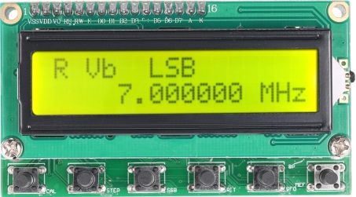
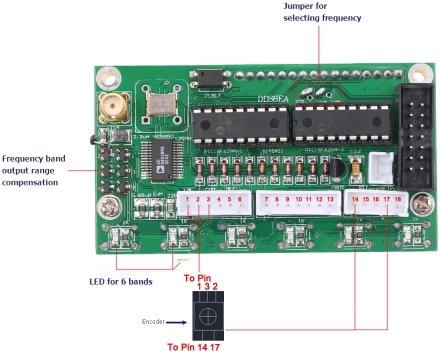

6-ти диапазонный AD9850 DDS.
Прошли те времена, когда создание синтезатора частоты любительского
трансивера было под силу самым квалифицированным радиолюбителям.
С появлением микросхемы AD9850 задача упростилась.
За несколько долларов DDS модуль на её основе без проблем можно
приобрести на eBay. Кроме этого нам необходим контроллер, для
управления DDS, буквенно-цифровой индикатор и валкодер.
Я не стал изобретать велосипед и приобрёл готовый
6-ти
диапазонный DDS, который используется в SSB
6.1 трансивере.
Этот синтезатор предназначен для работы в составе простых КВ
приёмников
и трансиверов, или же просто как генератор частоты.
Микросхема AD9850 фирмы Analog
Devices, применённая в данном синтезаторе, представляет собой полный
DDS (Direct Digital Synthesis) с встроенным компаратором.
Такие синтезаторы уникальны своей точностью, практически не подвержены
температурному дрейфу и старению.
Благодаря высоким техническим характеристикам DDS синтезаторы в
последнее время вытесняют обычные аналоговые синтезаторы частоты.
Их основное преимущество — очень высокое разрешение по частоте и фазе,
управление которыми осуществляется в цифровом виде.
Цифровой интерфейс позволяет легко реализовать микроконтроллерное
управление.
Внешний вид синтезатора.
Передняя панель.

Назначение кнопок синтезатора.
- CAL: калибровка.
- STEP: шаг перестройки частоты.
- SSB: режим модуляции: USB, LSB, AM, CW.
- RIT: сдвиг частоты при работе CW.
- VFO: выбор между VFO A и VFO B.
- MEM: запись в память/ извлечение из памяти.
Обратная сторона и подключение синтезатора.

Настройка синтезатора.
Подключите DDS.
Установите промежуточную частоту 8.000000 MHz. Делается это так:
1. Выключите питание. Нажмите на кнопку CAL и держите её. Включите
питание удерживая эту кнопку нажатой. Далее вы увидите следующее:
DDS REF MULT CLK
X1 REFCLK
2. Отпустите кнопку. На экране вы видите значение множителя частоты.
Если у вас синтезатор на AD9850, то должно быть X1.
Если на AD9851, то должно быть X6 (покрутите ручку энкодера, чтобы
сменить коэффициент умножения частоты)
3. Нажмите еще раз коротко на первую кнопку и вы увидите опорную
частоту тактового генератора для AD9850 (180 MHz для AD9851). Если у
вас есть возможность точно измерить частоту, вы можете ввести ее сюда
SYSTEM CLK
125.000000 MHz
4. Ещё раз коротко нажмите на первую кнопку и вы увидите
OFFSET FREQ 0.000000 MHz.
Это частота смещения генератора относительно промежуточной частоты. В
нашем случае наша частота ПЧ 8 MHz, значит нужно будет установить ее
отрицательное зачение: -8.000000 MHz. Используйте кнопку STEP, чтобы
сменить шаг энкодера: зажмите ее и крутите ручку энкодера шаг будет
мигать словно подчеркивание.
5. Ещё раз коротко нажмите 1 кнопку
MAX DDS FREQ.
Это максимальная частота генератора. Она должна быть где-то 38 MHz или
выше.
6. Ещё раз коротко нажмите 1 кнопку и увидите минимальную частоту приёма
MIN RX DDS FREQ 9.000000 MHz.
Из этой частоты вычитается промежуточная частота. Рекомендуется
устанавливать здесь частоту в 9.5 MHz, чтобы не залазить на
радиовещательный диапазон. Если очень хочется послушать АМ, то можно
поставить что-нибудь вроде 8.5 MHz.
7. Ещё раз коротко нажмите 1 кнопку и увидите смещение для SSB
SSB OFFSET 0.000000 MHz.
Установите его в 0.001400 MHz.
8. Ещё одно короткое нажатие и вы попадете в частоту настройки смещения
для телеграфа
CW OFFSET 0.000700 MHz.
Если у вас там ноль, то поставьте свои значения. В нашем случае это 700
Герц.
9. Ещё одно коротко нажатие и дисплей покажет SAVING.
Это значит, что ваши настройки будут сохранены.
Если вы запутались, вы всегда можете начать заново, просто подождите
немного, DDS сам выйдет из режима настройки. Затем выключите питание и
включите снова с зажатой кнопкой CAL.
На этом настройка генератора завершена и уже можете перестраиваться по
диапазону.
Схема модуля синтезатора на AD9850 для трансивера.
{kind=link}
Владимир, EW7AS
Главная | О своём городе | Антенны | Радиосвязь на КВ | Радиосвязь на УКВ | Гостевая
Copyright © 2020 Сайт радиолюбителей г. Климовичи | Design studio «Zurbagan»